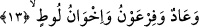
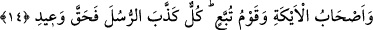

onlardan sonra yırtıcı hayvanlar, evlerine tilkiler ve sırtlanlar yerleşti. Bahçeleri ve
mallarının yerini faydası olmayan çalılıklar ve dikenler aldı. Orada sadece, çöllerde
geceleri duyulan cin sesleri ya da aslan kükremeleri işitilir oldu. Cenâb-ı Allah’ın
gazabından ve azabını mûcib olan şeylerde ısrar etmekten yine O’na sığınırız. Tekmile
isimli eserde Tefsiru’l-Mukrî’den naklen böyle izah edilmektedir.
Rass’ın Yemâme’ye yakın bir yerdeki bir kuyu veya Azerbaycan’daki bir kuyu veya
bir vadi olduğu da söylenmiştir. Şâir şöyle söyler:
Onlar Ress vadisi için ağızdaki el gibidirler.
Bu konuda Furkân sûresinde izahat yapılmıştı, oraya da müracaat edilebilir.
Sâlih (a.s.)’ın kavmi olan Semûd de yalanlamıştı. Semûd ikinci Âd’in oğludur. Asıl
“Âd kavmi” olarak bilinen Âd ise İrem’de yaşayan ilk Âd’dir.
13. Âd ve Firavun ile Lût’un kardeşleri de (yalanladılar).
“Âd (kavmi)” Hûd (a.s.)’ı, “Firavun”, Mûsâ ve Hârûn (a.s.)’ı yalanladılar.
Öncesinde ve sonrasında zikredilen topluluklara uyumlu olması bakımından burada
Firavun kelimesi ile Firavun ve kavmi murâd edilmektedir.
“Lûtun kardeşleri..” Lût’un sıhrî yönden hısım ve akrabaları da onu yalandılar. Sıhr
kişinin kızının ve kız kardeşinin kocası olması yönüyle gerçekleşen akrabalığı ifade
eder. Burada Lût (a.s.)’ın “kardeşleri”nden din bakımından değil nesep bakımından
müşterek olmaları cihetiyle kavminin kasdedildiği söylenmiştir. Atâ şöyle demiştir: Her
peygamberin yanında onu destekleyen kavminden birileri vardı. Ancak Lût, yalnızdı.
14. Eyke halkı ve Tübba’ kavmi de. Bütün bunlar peygamberleri yalanladılar da
tehdidim gerçekleşti!
“Eyke halkı ve Tübba’ kavmi de.” Eyke halkı, Ehl-i Medyen’den başka Şuayb
(a.s.)’ın kendilerine gönderildiği kavimdir. Nitekim onlar Eyke’de yaşıyorlardı. Eyke,
sidir otlarının ve bir kısım dikenlerin bittiği ormanlık bir bölgedir. Hicr sûresinde bu
konu geçmişti.
Tübba, Yemen meliki Hımyerî’dir. Duhân sûresinde bu kavmin durumu izah edilmişti.
“Bütün
bunlar
(kendilerine
gönderilen)
peygamberleri
yalanladılar.”
Peygamberlerin gönderildikleri, hepsinin ortak esası âhiret gününe imân olan
şeriatlarını yalanladılar. Âyetlerde yukarıda zikredilen her bir kavmin kendilerine
gönderilen peygamberlerini yalanladıkları anlaşılmaktadır. Dolayısıyla kavimlerin